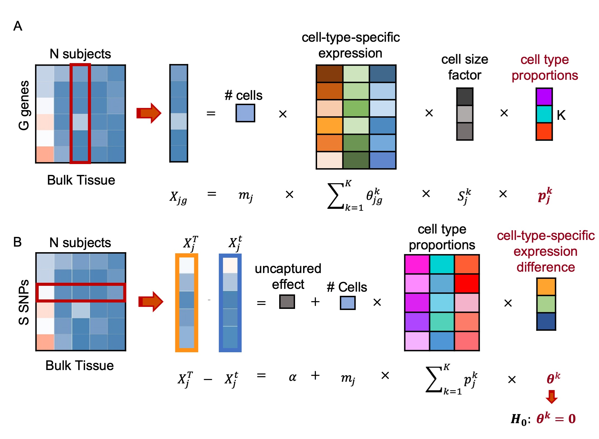

This vignette provides a walk through tutorial on how to use BSCET to characterize cell-type-specific allelic expression imbalance (AEI), and the association of cell-type-specific AEI with clinical factors by integrative analysis of bulk and single cell RNA sequencing (RNA-seq) data. BSCET involves two steps. First, using MuSiC (Wang et al. 2019), we infer cell type proportions in the bulk RNA-seq samples by incorporating cell-type-specific gene expression information provided by a scRNA-seq reference. Second, for each heterozugous transcribed SNP, BSCET then aggregates allele-specific read counts from the bulk RNA-seq data across individuals to model cell-type-specific expression difference between two alleles by linear regression, and tests for the evidence of cell-type-specific AEI.

Below, using the human pancreas datasets, we demonstrate BSCET step by step.
Following MuSiC (Wang et al. 2019), we deconvolve bulk RNA-seq data of 89 subjects from Fadista et al. (2014) using single cell reference obtained from Segerstolpe et al. (2016). We constrained our estimation on 6 well-studied cell types: acinar, alpha, beta, delta, ductal and gamma. Both bulk and single cell data used are in the form of ExpressionSet.
library(MuSiC)
library(xbioc)
fadista.eset = readRDS("./GSE50244bulkeset.rds")
seger.eset = readRDS("./EMTABesethealthy.rds")
est.prop = music_prop(bulk.eset = fadista.eset, sc.eset = seger.eset, clusters = 'cellType',
samples = 'sampleID', select.ct = c('acinar','alpha', 'beta', 'delta','ductal',
'gamma'), verbose = F)$Est.prop.weightedBelow shows the estimated cell type proportions for each individual.
Given the estimated cell type proportions, for each heterozugous transcribed SNP, BSCET aggregates allele-specific read counts of the bulk RNA-seq data across individuals and detects cell-type-specific AEI of the SNP. The input allelic bulk RNA-seq data contain columns:
SNP: character, the name or chromosome location of each heterozygous transcriobed SNP;ref: numeric, the SNP-level allele-specific read counts of the reference allele;alt: numeric, the SNP-level allele-specific read counts of the alternative allele;id: character, individual identifier;The tables below show an example allelic RNA-seq data of SNP chr1:22336305.
Let \(X_j^T\) and \(X_j^t\) be the read counts for the reference and alternative alleles of the transcribed SNP, respectively. The difference of two allele-specific reads can be expressed as:
\[X_j^T-X_j^t = \alpha+m_j\sum_{k=1}^Kp_j^k\theta^k+\epsilon_j\] where the intercept \(\alpha\) captures the allelic expression difference not explained by the selected \(K\) cell types; \(m_j\) captures total number of cells in the bulk tissue for individual \(j\); \(p_j^k\) represents the cell type proportions of cell type \(k\) for individual \(j\); \(θ^k\) represents allelic expression difference between two alleles of the transcribed SNP for cell type \(k\); \(\epsilon_j\) is the random error term and assumed to follow \(N(0,\sigma^2)\). To detect cell-type-specific AEI in the population, for cell type \(k\), using t statistic, we test the following hypothesis:
\[H_0: \theta^k=0 \;\; vs \;\; H_1: \theta^k \neq 0\] As \(m_j\) is not observed for the bulk data, we esimate it using the individual-specific library size factor using DESeq2 (Anders and Huber 2010). DESeq2 takes the bulk-level gene expression matrix obtained from the ExpressionSet as the input.
library(DESeq2)
expmat <- exprs(fadista.eset)
#
#colnames(expmat) = as.character(colnames(expmat))
coldata = matrix(colnames(expmat),ncol=1)
colnames(coldata) = 'id'
rownames(coldata) = colnames(expmat)
dds <- DESeqDataSetFromMatrix(countData = expmat,
colData = coldata,
design = ~ id)## Warning in DESeqDataSet(se, design = design, ignoreRank): some variables in design formula are characters, converting to
## factorsdds <- estimateSizeFactors(dds)
mj = sizeFactors(dds)
head(mj)## Sub1 Sub2 Sub3 Sub4 Sub5 Sub6
## 0.9595915 0.9580428 1.0016846 0.8483268 1.0137396 0.8437796For each individual, calculated \(m_jp_j^k\) and combinine it with the allelic count data, we can have the data as the following:
Then, regressing the difference of two allele-specific read counts over \(m_jp_j^k\) through linear regression, we can obtain the p-values of AEI detection for each cell type. As we can see below, the SNP was detected as having cell-type-specific AEI for acinar cells.
mod=lm(ref-alt ~ `acinar`+`alpha`+`beta`+`delta`+`ductal`+`gamma`,data=dat)
p_value = summary(mod)$coefficient[,4][-1]
print(round(p_value,5))## acinar alpha beta delta ductal gamma
## 0.00032 0.44113 0.09326 0.22204 0.93712 0.75730We can readily extend the model in step 2 to assess covariate effects on cell-type-specific AEI. Let \(V_j\) be the covariate of interest for individual \(j\). We can modify the model by adding an interaction term between the covariate and the estimated cell type proportions:
\[X_j^T-X_j^t=\alpha+m_j\sum_{k=1}^Kp_j^k(\theta^k +V_j \theta_{\Delta}^k)+ \epsilon_j\]
where \(\theta_{\Delta}^k\) is the covariate effect on the cell-type-specific AEI. In practice we will likely test for the covariate effect on cell-type-specific AEI only if a cell-type-specific AEI has been detected based on model in step 2. Therefore, here, we are interested in testing whether the cell-type-specific AEI changes with the covariate, i.e., for each cell type \(k\), we test the following hypothesis:
\[H_0: \theta_{\Delta}^k=0 \;\; vs \;\; H_1: \theta_{\Delta}^k\neq 0\]
As the bulk RNA-seq data are from pancreatic islets, here, we test for the effect of HbA1c, a well-known biomarker for T2D diagnosis, on cell-type-specific AEI. By including HbA1c, we can have the data as the following:
Model the difference of two allele-specific read counts over the interaction between HbA1c and the estimated cell type proportions through linear regression, we can obtain the p-values, i.e., the significance, of the effect of HbA1c on cell-type-specific AEI. As we can see below, cell-type-specific AEI was not associated with HbA1c level for all cell types.
mod=lm(ref-alt ~ `acinar`+`alpha`+`beta`+`delta`+`ductal`+`gamma`+
HbA1c:(`acinar`+`alpha`+`beta`+`delta`+`ductal`+`gamma`),data=dat)
p_value = summary(mod)$coefficient[,4][8:13]
print(round(p_value,5))## acinar:HbA1c alpha:HbA1c beta:HbA1c delta:HbA1c ductal:HbA1c gamma:HbA1c
## 0.49077 0.05900 0.16795 0.05154 0.39757 0.13501Anders, S., and W. Huber. 2010. “Differential Expression Analysis for Sequence Count Data.” Genome Biology 11: R106.
Fadista, J., P. Vikman, E. O. Laakso, I. G. Mollet, J. L. Esguerra, J. Taneera, P. Storm, et al. 2014. “Global Genomic and Transcriptomic Analysis of Human Pancreatic Islets Reveals Novel Genes Influencing Glucose Metabolism.” Proceedings of the National Academy of Sciences of the United States of America 111: 13924.
Segerstolpe, å., A. Palasantza, P. Eliasson, E. Andersson, A. Andréasson, X. Sun, S. Picelli, et al. 2016. “Single-Cell Transcriptome Profiling of Human Pancreatic Islets in Health and Type 2 Diabetes.” Cell Metabolism 24: 593–607.
Wang, X., J. Park, K. Susztak, N. R. Zhang, and M. Li. 2019. “Bulk Tissue Cell Type Deconvolution with Multi-Subject Single-Cell Expression Reference.” Nature Communications 10: 380.
Developed by Jiaxin Fan (jiaxinf@pennmedicine.upenn.edu).